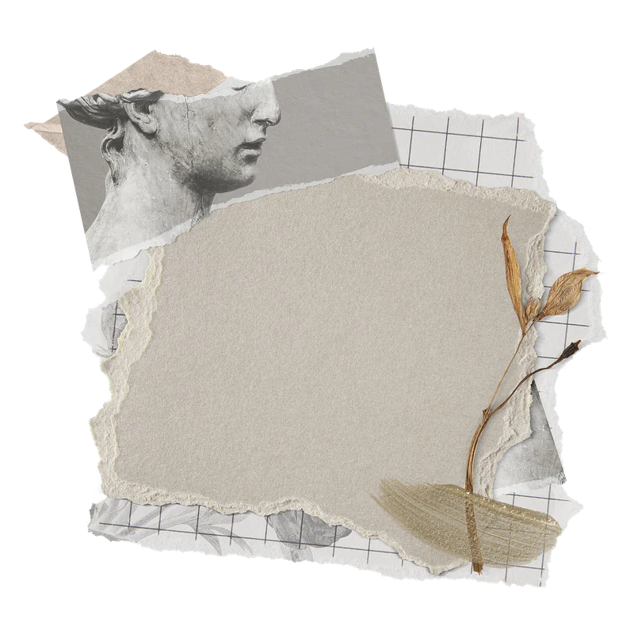
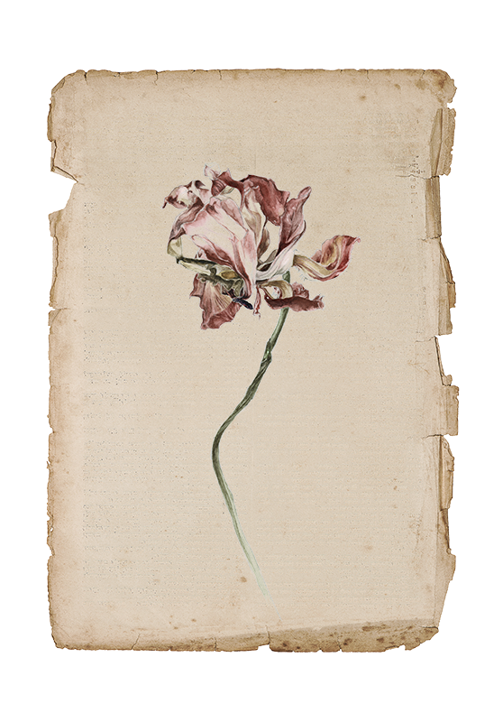

—
back
 how can we create a better future? a better life for ourselves?
i want to create endlessly
i want to create endlessly
i want to create endlessly
i want to create endlessly
i want to create endlessly
i want to create endlessly
i want to create endlessly
i want to create endlessly
i want to create endlessly
sometimes i worry that there will be too little creativity left in this world technology will overpower us artists and leave us with nothing to create in history art has been so important to so many people and cultures, yet here we are, and all i want to do is create my own world to escape into so i can run away and enjoy myself in my own utopia of my own design
world building, mind shifting
what would happen if the world was run by artists?
orange moon rising
illuminating
it scintillates, left
the reflection cleft
hear the waves, the wind
boats dotting like pins
speckled same as leaves
golden the moon bleeds
onto the trees tops
like full moons, they'll stop
blue moons have darkened
bright skies; autumn ends,
barren winter's here
fall shall reappear